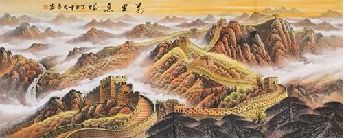

万里长城，龙脉绵延，是中华民族的骄傲，无论是“望长城内外惟余莽莽”的诗句，还是“万里长城永不倒”的歌谣，或是“巨龙横卧轮廓巍峨”的诗歌，无不展现着长城在中国人心中的分量。其实长城也是画家笔下永久的绘画题材，中国画中的国画长城有着很深的内在含义和许多美好的寓意，所以中国人喜欢画长城景色而后挂于厅堂，不但求吉祈福，还承载着中华悠悠历史和美好希冀以及勇敢无畏的中华魂。山调大脊”。自建成至今，这座县衙大门一直是怀柔的衙署正门。目历经多次修葺，仍保持原风格。
今天给大家带来几幅元鲁画家的长城作品。元鲁擅画金色长城山水画的王宁，他的北国长城画作品，既有着深厚的传统积淀，又有着鲜明的时代气息，雄浑博大、气势恢宏，博得了画界同仁和众多书画爱好者的青睐，多幅作品曾被国内知名的艺术机构收藏及作为外交国礼馈赠国外政要。
